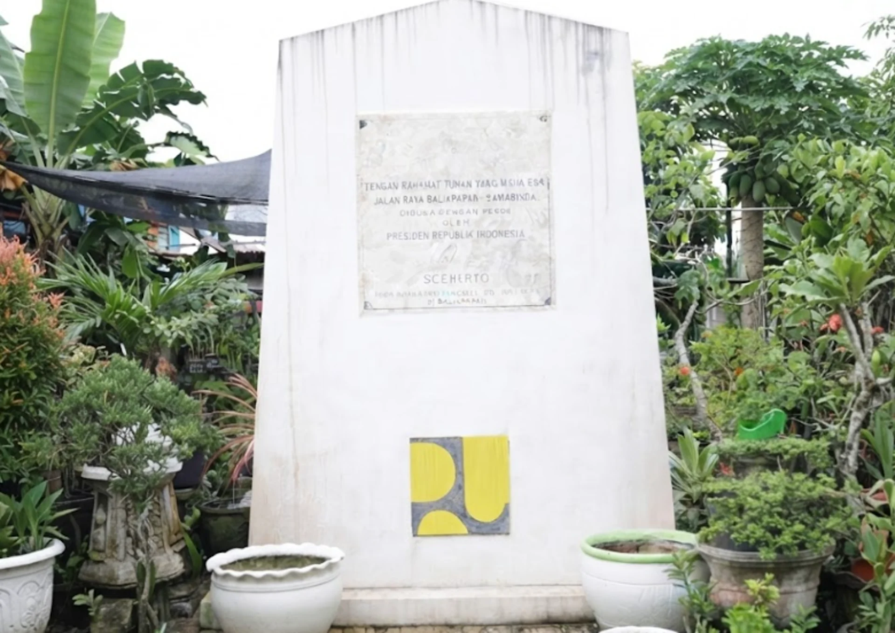

Tugu Peresmian Jalan Raya Balikpapan-Samarinda
Benda bersejarah ini dilindungi oleh undang-undang sebagai Struktur Cagar Budaya, namun terdapat tantangan dalam perawatan dan publikasinya sehingga sering kurang dikenal luas.
Di area Jalan Soekarno Hatta KM. 4,5 Kelurahan Graha Indah Kota Balikpapan merupakan Struktur Cagar Budaya tingkat Kota Balikpapan.


Lokasi
Kota Balikpapan, Jalan Soekarno Hatta KM. 4,5 Kelurahan Graha Indah Kecamatan Balikpapan Utara
Struktur Cagar Budaya ini terdapat di sekitar rumah warga yang terdapat di persimpangan jalan antara jalan Balikpapan-Samarinda dan menuju arah MT. Haryono.
Latar Sejarah
- Tugu ini didirikan sebagai monumen penanda dibukanya secara resmi Jalan Raya Balikpapan – Samarinda.
- Peresmian jalan raya tersebut dilakukan oleh Presiden Republik Indonesia saat itu, yaitu Bapak Soeharto.
- Peresmian dilaksanakan pada hari Rabu, tanggal 20 Juli 1977 di Balikpapan.
- Monumen ini berupa tugu berwarna putih yang dilengkapi dengan prasasti batu bertuliskan teks peresmian serta lambang atau logo terkait (seperti logo Departemen Pekerjaan Umum/PU).
- Serta dibuat Tugu Prasasti ini untuk mengenang kawan-kawan yang telah gugur dalam pelaksanaan pembangunan Jalan Balikpapan – Samarinda.
Tugu Peresmian Jalan Balikpapan-Samarinda


Prasasti Untuk Mengenang Yang Gugur dalam Pelaksanaan Pembangunan


Gambar Seperti Aslinya
Gambar di Perjelas


Copyright by Bidang Budaya DISDIKBUD Kota Balikpapan